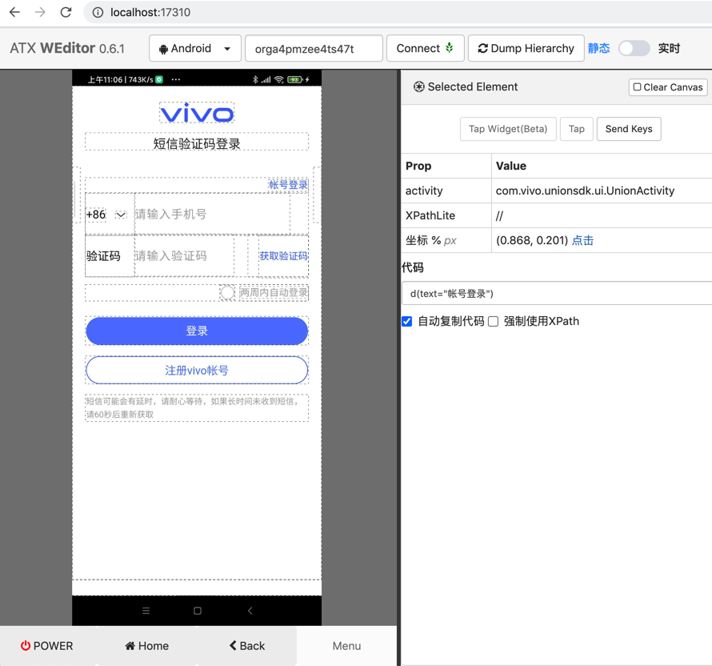
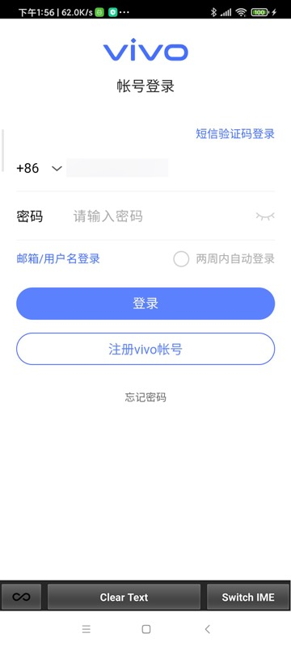
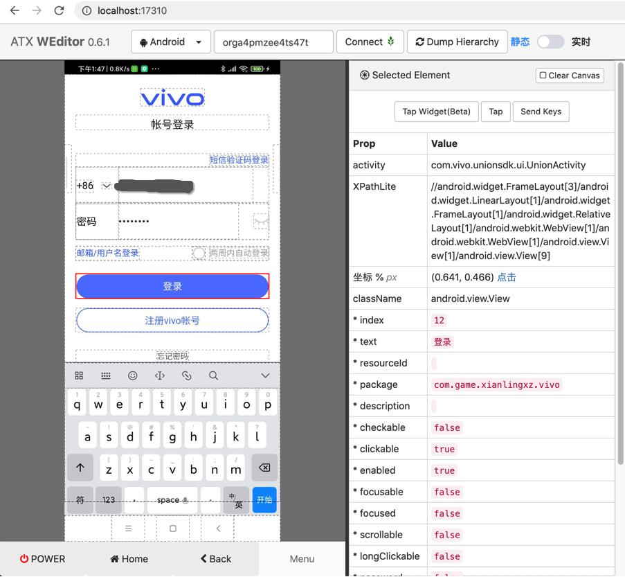

Vivo账号自动登录
自动化输入vivo账号和密码并登录
背景：
测试游戏期间，遇到非Vivo手机，需要手动输入Vivo的账号和密码，才能继续测试。
所以写代码将此过程自动化。
具体过程：
- 短信验证码登录页
- weditor调试
- 
- weditor调试
- 点击：账号登录 按钮
- 切换页面到：账号登录页
- 支持已经切换到 账号登录页，而不会误点击 中间顶部的 账号登录 文字
- 账号登录页
- 请输入手机号：输入手机号
- 
- 支持已经输入手机号，再次重新输入手机号
- 此处输入手机号会触发输入法切换到 fastIME
- 请输入密码：输入密码
- 真机效果
- weditor调试
- 
- 真机效果
- 支持已经输入密码，再次重新输入密码
- 点击：登录 按钮
- 请输入手机号：输入手机号
代码：
原始独立测试代码：
import time
import uiautomator2 as u2
def selectorSetText(u2Dev, curXpathSelector, inputText):
selectorSetTextResp = curXpathSelector.set_text(inputText)
logging.info("selectorSetTextResp=%s", selectorSetTextResp) # selectorSetTextResp=None
# 在set_text后，输入法会变成FastInputIME输入法
# 用下面代码可以实现：关掉FastInputIME输入法，切换回系统默认输入法
u2Dev.set_fastinput_ime(False)
################################################################################
# for Redmi 10X: auto do vivo account login, input phone and password to login
################################################################################
def autoDoVivoLogin(u2Dev):
doScreenshot(u2Dev)
RegVivoAccountStr = "注册vivo帐号"
regVivoAccountXpath = """//android.view.View[@text="%s"]""" % RegVivoAccountStr
# '//android.view.View[@text="注册vivo帐号"]'
regVivoAccountSelector = u2Dev.xpath(regVivoAccountXpath)
if regVivoAccountSelector.exists:
logging.info("Found %s", RegVivoAccountStr)
accountLoginStr = "帐号登录"
# accountLoginXpath = """//android.view.View[@text="%s"]""" % accountLoginStr
# #
# accountLoginSelector = u2Dev.xpath(accountLoginXpath)
# if accountLoginSelector.exists:
# logging.info("Found %s", accountLoginStr)
# accountLoginSelector.click()
# accountLoginElement = u2Dev(text=accountLoginStr, className="android.view.View")
accountLoginElement = u2Dev(text=accountLoginStr, className="android.view.View", clickable="true")
logging.info("accountLoginElement=%s", accountLoginElement) # accountLoginElement=<uiautomator2._selector.UiObject object at 0x10dd4be80>
logging.info("accountLoginElement.exists=%s", accountLoginElement.exists) # accountLoginElement.exists=True
if accountLoginElement.exists:
accountLoginElement.click()
logging.info("Has clicked %s button", accountLoginStr)
time.sleep(0.1)
doScreenshot(u2Dev)
else:
logging.warning("Not found %s button", accountLoginStr)
# phoneXpath = """//android.widget.EditText[@text="" and @index="5"]"""
phoneXpath = """//android.widget.EditText[@index="5" and @clickable="true" and @focusable="true"]"""
phoneSelector = u2Dev.xpath(phoneXpath)
if phoneSelector.exists:
logging.info("Found 请输入手机号")
# phoneSelector.set_text(Vivo_Account)
selectorSetText(u2Dev, phoneSelector, Vivo_Account)
logging.info("Has input vivo account phone number")
else:
logging.warning("Not found 请输入手机号")
passwordStr = "请输入密码"
# passwordXpath = """//android.widget.EditText[@text="%s" and @index="2" and @clickable="true"]""" % passwordStr
passwordXpath = """//android.widget.EditText[@index="2" and @clickable="true" and @focusable="true"]"""
passwordSelector = u2Dev.xpath(passwordXpath)
if passwordSelector.exists:
logging.info("Found %s", passwordStr)
# pwdClickResp = passwordSelector.click()
# logging.debug("pwdClickResp=%s", pwdClickResp)
# doScreenshot(u2Dev)
selectorSetText(u2Dev, passwordSelector, Vivo_Password)
logging.info("Has input vivo password")
else:
logging.warning("Not found %s", passwordStr)
loginStr = "登录"
# loginXpath = """//android.view.View[@text="登录" and @clickable="true"]"""
loginXpath = """//android.view.View[@text="登录" and @index="12" and @clickable="true"]"""
loginSelector = u2Dev.xpath(loginXpath)
if loginSelector.exists:
loginSelector.click()
logging.info("Has clicked %s button", loginStr)
doScreenshot(u2Dev)
else:
logging.warning("Not found %s", loginStr)
def androidAutomation():
u2Dev = u2.connect(DeviveId)
logging.info("u2Dev=%s", u2Dev) # u2Dev=<uiautomator2.Device object at 0x1079bee20>
。。。
autoDoVivoLogin(u2Dev)
合并到项目后：
Vivo_Register_Vivo_Account_Xpath: "//android.view.View[@text='注册vivo帐号']"
self.driver.watcher.when(self.config["Vivo_Register_Vivo_Account_Xpath"]).call(self.autoDoVivoAccountLogin)
def autoDoVivoAccountLogin(self):
"""Auto do Vivo account login"""
logging.info("Try auto do vivo account login")
accountLoginStr = "帐号登录"
# accountLoginXpath = """//android.view.View[@text="%s"]""" % accountLoginStr
# #
# accountLoginSelector = self.driver.xpath(accountLoginXpath)
# if accountLoginSelector.exists:
# logging.info("Found %s", accountLoginStr)
# accountLoginSelector.click()
# accountLoginElement = self.driver(text=accountLoginStr, className="android.view.View")
accountLoginElement = self.driver(text=accountLoginStr, className="android.view.View", clickable="true")
logging.debug("accountLoginElement=%s", accountLoginElement) # accountLoginElement=<uiautomator2._selector.UiObject object at 0x10dd4be80>
logging.debug("accountLoginElement.exists=%s", accountLoginElement.exists) # accountLoginElement.exists=True
if accountLoginElement.exists:
accountLoginElement.click()
logging.info("Has clicked %s button", accountLoginStr)
time.sleep(0.1)
else:
logging.warning("Not found %s button", accountLoginStr)
# phoneXpath = """//android.widget.EditText[@text="" and @index="5"]"""
phoneXpath = """//android.widget.EditText[@index="5" and @clickable="true" and @focusable="true"]"""
phoneSelector = self.driver.xpath(phoneXpath)
if phoneSelector.exists:
logging.info("Found 请输入手机号")
# phoneSelector.set_text(Vivo_Account)
self.selectorSetText(phoneSelector, self.config["Vivo_Account"])
logging.info("Has input vivo account phone number")
else:
logging.warning("Not found 请输入手机号")
passwordStr = "请输入密码"
# passwordXpath = """//android.widget.EditText[@text="%s" and @index="2" and @clickable="true"]""" % passwordStr
passwordXpath = """//android.widget.EditText[@index="2" and @clickable="true" and @focusable="true"]"""
passwordSelector = self.driver.xpath(passwordXpath)
if passwordSelector.exists:
logging.info("Found %s", passwordStr)
# pwdClickResp = passwordSelector.click()
# logging.debug("pwdClickResp=%s", pwdClickResp)
# doScreenshot(u2Dev)
self.selectorSetText(passwordSelector, self.config["Vivo_Password"])
logging.info("Has input vivo password")
else:
logging.warning("Not found %s", passwordStr)
loginStr = "登录"
# loginXpath = """//android.view.View[@text="登录" and @clickable="true"]"""
loginXpath = """//android.view.View[@text="登录" and @index="12" and @clickable="true"]"""
loginSelector = self.driver.xpath(loginXpath)
if loginSelector.exists:
loginSelector.click()
logging.info("Has clicked %s button", loginStr)
else:
logging.warning("Not found %s", loginStr)
logging.info("Complete auto do vivo account login")
- 后记：
- 还会额外弹出验证码手动输入页面
- 此处无法通过代码获取（另外手机收到的）验证码，所以无法代码自动化，只能手动输入
- 效果
- 效果
- 此处无法通过代码获取（另外手机收到的）验证码，所以无法代码自动化，只能手动输入
- 验证后，会自动返回
- 还会额外弹出验证码手动输入页面